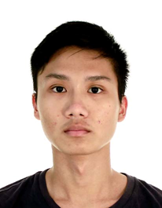

Personal Particulars
Name: Moses Ang Le En
Education
National University of Singapore
Aug 2020 – May 2024
Bachelor of Arts
Anglo-Chinese Junior College
Jan 2016 - Nov 2017
Work Experience
Monfort Care, @27FSC
May 2022 - July 2022
Intern
Volunteer Experience
Monfort Care, @27FSC
Aug 2022 - Dec 2022
under FSC's group work programme targeting children in multi-stressed families
HealthServe
Aug 2022 - Present
Touch Young Arrows
Jan 2019 - Present